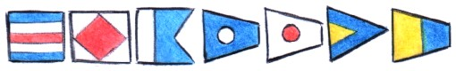

About
About Projects
Projects Games
Games Stories
Stories Store
Store Hobby
Hobby Notes
Notes How-to
How-to
Papa India November Oskar. Pino, Pino, Pino yotto no ko! Aoi umi kara, yatte kita!
- Size: 10 m
- Type: Yamaha33
- Year: 1982
- Material: Fibreglass
- Countries visited: Mexico, French Polynesia, Cook Islands, Tonga, Niue, New Zealand, Fiji, Marshall Islands and Japan
- Distance covered: 37'062 km
Pino has been home to me and my partner devine since 2016. We have traveled around the south and north Pacific together, and experienced many great and difficult things.

My sailboat is a Japanese boat. It was manufactured in Shizuoka and put together in the Pacific Northwest. It is a simple boat, with simple systems. Pino has solar panels, a wood stove for heating, a dry toilet, no refrigeration, no hot water or water pressure, and a minimum of high-power devices.